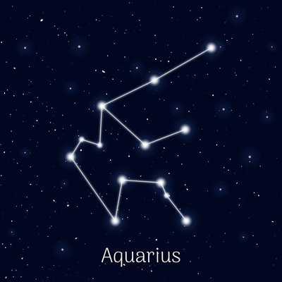
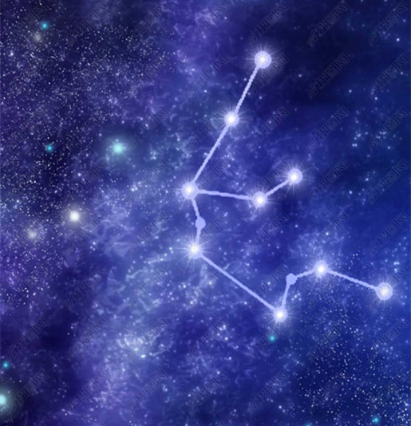

众神在所住的奥林匹斯神殿社酒宴，畅饮涅塔尔神酒。此时负责斟酒的是宙斯和赫拉王妃的女儿赫贝。赫贝之美远近驰名，但到了适婚年龄，就因和宙斯之子格拉斯结婚之故，不能再担任斟酒职务。宙斯乃寻找接班人，有一天宙斯下凡时，发现一名追羊的美少年，乃化身为鹭将他抓住，少年就更名为卡尼梅德斯，成为御用牧羊人。
宙斯赐他永保年轻，可是却必须要终身担任斟酒职务。卡尼梅德斯觉得相当光荣，总是勤奋的工作。深受感动的宙斯，乃送给他一个装满智慧之水的水瓶，日后也被封为天上的水瓶座。
